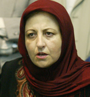
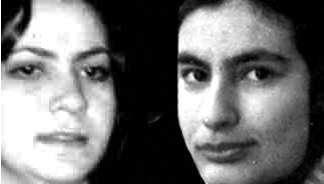

|
|
|
Browsing
Contact Us |
Campaigners |
Face to Face |
Tribune |
Interview |
News |
On the Web |
One Million |
Report
Farsi | Français | German | Italian | Spanish | العربية Also in this section
|
 Interview with Shirin Ebadi: Illegal to Publicly Announce Charges Before Trial and ConvictionRonak and Hana’s only crime is to seek equality Sunday 6 January 2008 Change for Equality: Over two months have passed since the arrests of Ronak Saffarzadeh and Hana Abdi, two members of the Azar Mehr Kurdish Women’s Society (a women’s NGO in Kurdistan, Iran). They were arrested shortly after they collected signatures for the One Million Signatures Campaign at an event in commemoration of the International Day of the Child. Ronak Safarzadeh was arrested on October 10, and Hana Abdi was arrested on November 4. Lack of information about their condition has concerned many equal-rights and human rights activists in Iran and internationally. Meanwhile, in order to derail efforts designed to ensure their freedom, some news websites have announced that Ronak and Hana were collaborating with terrorist groups [working against the Iranian government]. The girls have not yet been permitted visits with family members or any of the lawyers who have volunteered to take on their cases. Shirin Ebadi, lawyer and Nobel Peace Laureate, offered to take on legal representation of Hana and Ronak but the Sanandaj Revolutionary Court has stated that until the conclusion of the investigations, they will not permit any lawyers to take on the cases of these women’s rights activists. We asked Shirin Ebadi about the allegations against Hana and Ronak and the treatment they have received since their detention. Here is what Ebadi had to say with respect to the case of these two young activists: Unfortunately we are seeing that these days any small matter is viewed as a threat to national security. Individuals like Delaram Ali, Maryam Hosseinkhah, or Jelveh Javaheri were also arrested or tried with charges of disturbing public order and disrupting public opinion. Ronak and Hana, who were arrested because of their participation in the One Million Signatures Campaign and volunteering to collect signatures, have committed no crime but that of seeking gender equality. Their crime is that they do not want their husbands to marry other women; their crime is that they say God has created men and women equal and has given them equal rights, so why is the law so biased? I don’t believe that these two young women have endangered our national security. In my opinion, the court that considers our national security to be so frail and weak as to be disturbed by a signature, is in fact disrupting public opinion. By asserting this position, the court is creating fear and anxiety among the general public who are left wondering how exactly a simple signature on a petition can endanger our national security. The verdict [of endangering national security] in itself can be examined according to the Islamic Penal Code. I hope that judiciary officials realize that after 30 years, the Islamic Republic is strong enough as to not have its national security threatened by the mere act of signature collections [requesting the Parliament to reform certain laws]. This argument [of endangering national security] is not valid and it is somewhat of an insult to the Islamic Republic.
 Worst of all, according to our law, it is illegal to publicly announce the charges against someone before their trial and conviction. The person responsible for the public announcement of charges which are not yet official is subject to arrest for slander. This is the law that we must all abide by but unfortunately we sometimes see that the same officials who are responsible for enforcing these laws, don’t respect it. Some press outlets have accused Ronak and Hana of possessing weapons and attempting to overthrow the government; they have gone further to accuse these young girls of collaborating with enemy groups. And yet the cases of Ronak and Hana are still in their investigation phase; their cases have not been referred to court and these accusations are unproven. Unfortunately this conduct is not something new. Mr. Abdolfattah Soltani, a courageous lawyer, was arrested some time ago. Forty-eight hours after his arrest, the spokesperson for the judiciary—the government body responsible for ensuring the correct implementation of the law—announced that there was enough evidence to suggest that Mr. Soltani was a nuclear spy and that he has provided our enemies with nuclear secrets. After enduring 7 months in solitary confinement, they found that Mr. Soltani’s record was clean and he was cleared of all charges. My question is this: who must pay for the consequences of these actions? They arrest a lawyer and keep him in custody for 7 months, his family is distressed, his clients are stranded, and then they rule that in fact he was innocent all along. The same thing is happening to Hana and Ronak today. Two young girls who have no motives other than gender equality are arrested and before their case goes to court, fabricated news about charges against them appears in the press accusing them of possessing weapons, attempting to overthrow the government, and collaborating with enemy groups. I am certain that these young women will be acquitted on all these charges if they are tried in a just, fair, and public trial. The question here is why is it that some officials prefer to introduce a social critic as an armed enemy of the state? Attracting supporters is not such a difficult task. So, why is it that some officials act in ways that result in the increase of their enemies, rather than an increase in their supporters? I hope that the judiciary understands that our country can only thrive on the power of young people. They should engage in attracting young people as their supporters. This is the main challenge, because throwing young people into jail is easy. Message:1 |